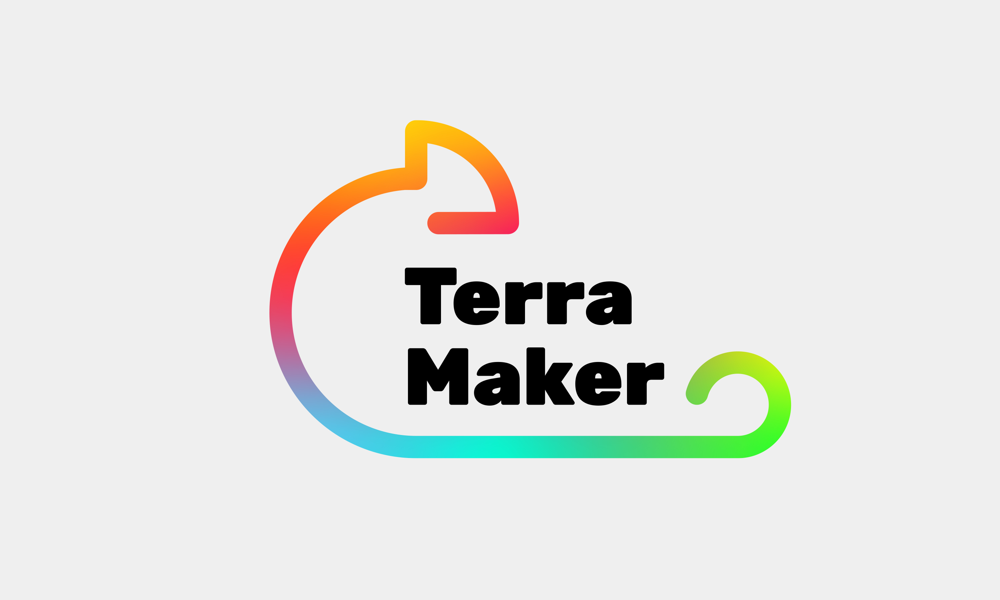
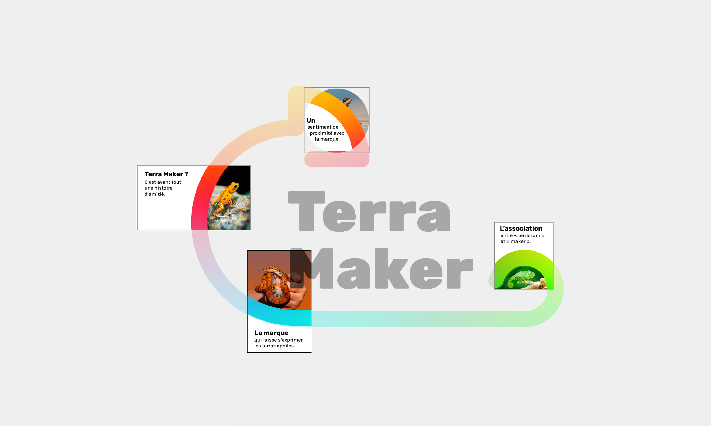
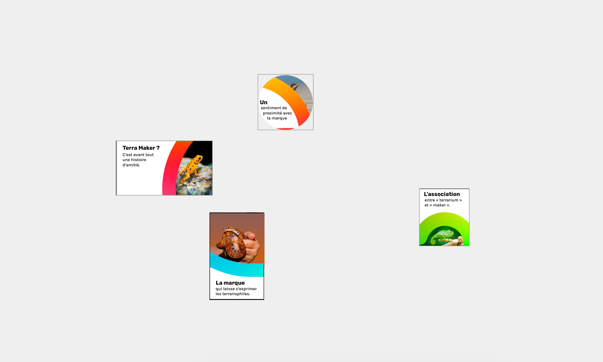
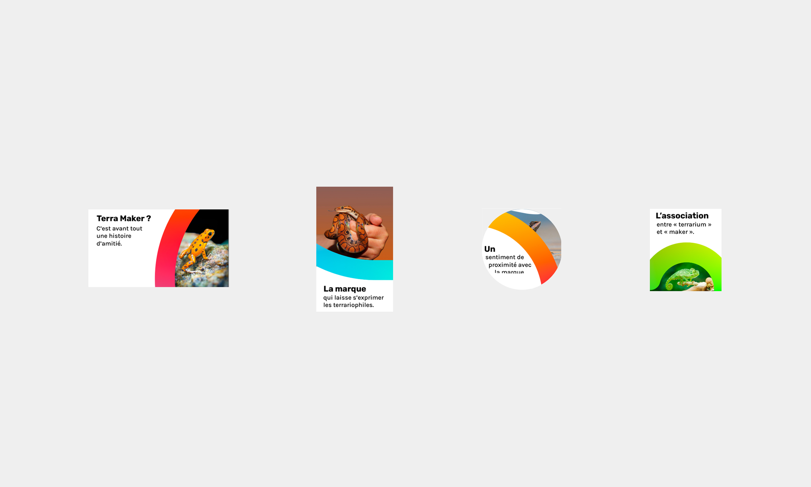

Terra Maker
Identité Visuelle
La marque qui laisse s’exprimer les terrariophiles.
Co-fondé par Mathieu Le Berre et Alexandre Coudray, LBC & CIE est une société de distribution de films basée à Paris. En achetant les droits de films pour les diffuser sous format DVD ou Streaming, l'entreprise propose un catalogue de long-métrages d'auteurs auprès d'un public cinéphile.
Afin de faire émerger LBC & CIE rapidement sur ce marché, j'ai voulu produire un logo avec un symbole graphique (logomark) et non seulement une typographie (logotype). Ainsi, le but était de s'éloigner de ces sociétés de distribution à l'image froide, esthétique voire trop sophistiqué.
L'autre idée était de pouvoir réutiliser les éléments du logo, c'est à dire les mains, en un système de déclinaison selon le type de format de communication.
Année
Avril 2022
Read in English 🇬🇧